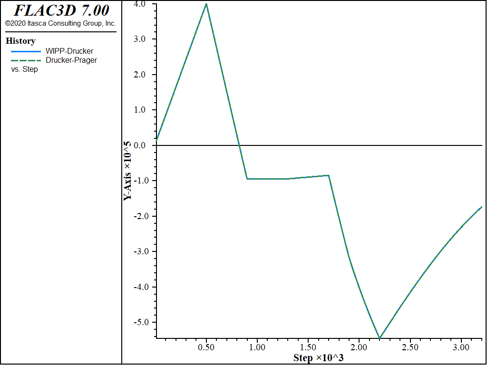
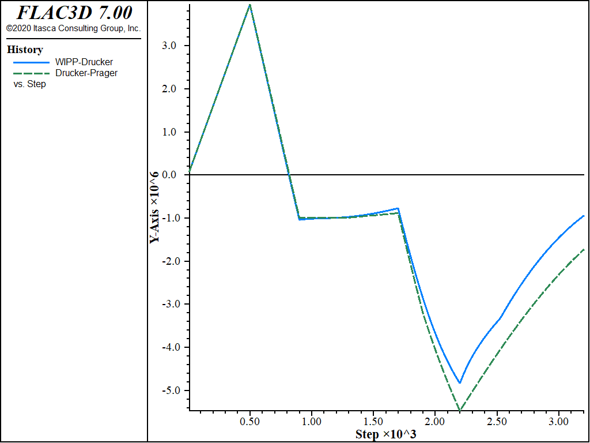
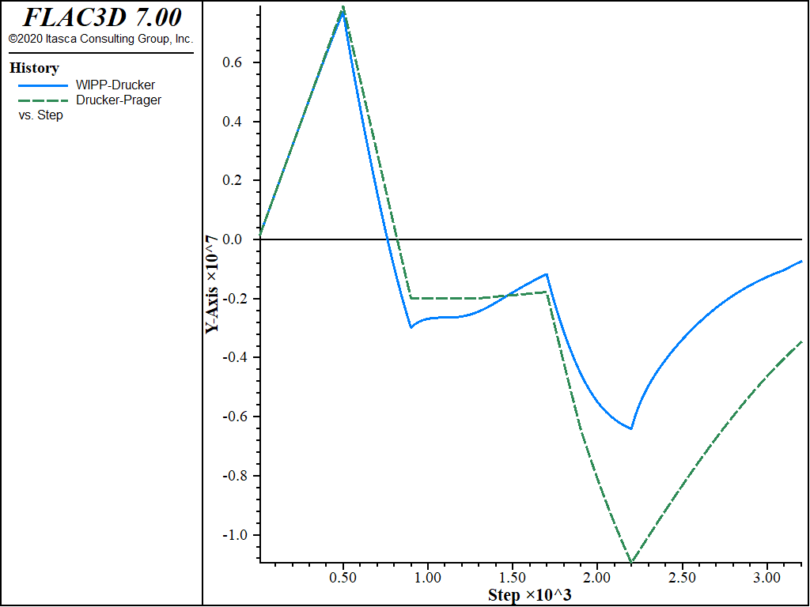

WIPP-Drucker 模型：与 Drucker-Prager 模型的比较
注意
要在 FLAC3D 中查看此项目，请使用菜单命令 。 选择“Creep/ComparisonWIPPDrucker”并选择“ComparisonWIPPDrucker.f3dprj”以加载。 该项目的主数据文件见本示例末尾（main data files）。
将粘塑性 WIPP-Drucker 模型（WIPP-Drucker model）与弹塑性 Drucker-Prager 模型（Drucker-Prager model）进行比较。如果在粘塑性模型中抑制蠕变， 则两个模型表现出相同的行为。
本示例通过对两个模型施加复杂的应变历史并比较 所有应力分量的对应历史，检验了 WIPP-Drucker 模型（WIPP-Drucker model） 和 Drucker-Prager 模型（Drucker-Prager model）。最后输出最大差异（按记录的最大 应力分量归一化）。结果表明最大归一化差异为 0.007%，处于机器精度的范围内。请注意，整个模拟过程中蠕变都处于活动状态， 但由于时步（\(\Delta t\)）设为 0.1 秒，蠕变效应很小。如果继续模拟，平均应力将变为拉应力。此时， 表观差异增大到 0.1%，但这只是由于两个模型在不同时刻交替发生 剪切屈服和拉伸屈服。结果绘于 图 1（Figure 1）。


图 1：\(\Delta t = 0.1\) s 时 WIPP-Drucker 与 Drucker-Prager 模型的应力比较。
将模型在 10 秒和 20 秒的时步下重复计算；与塑性效应相比，蠕变的影响将越来越 显著。结果分别绘于 图 2（Figure 2） 和 图 3（Figure 3）。当蠕变处于活动状态时，与 Drucker-Prager 模型的应力分量相比，应力分量普遍衰减。


图 2：\(\Delta t = 10\) s 时 WIPP-Drucker 与 Drucker-Prager 模型的应力比较。


图 3：\(\Delta t = 20\) s 时 WIPP-Drucker 与 Drucker-Prager 模型的应力比较。
数据文件
;------------------------------------------------------------------
; WIPP-Drucker 与 Drucker–Prager 模型的比较
;-------------------------------------------------------------------
model new
model large-strain off
fish automatic-create off
model title "Comparison of the visco-plastic and Drucker-Prager models"
;
model configure creep
zone create brick size 2 1 1
;
zone cmodel wipp-drucker range position-x 0 1
;---> 共同属性
zone property shear 12.4e9 bulk 20.7e9 tension 1e15 friction-drucker 0.5 ...
dilation-drucker 0.3 cohesion-drucker 1e4 range position-x 0 1
zone cmodel assign drucker-prager range position-x 1 2
;---> 共同属性
zone property shear 12.4e9 bulk 20.7e9 tension 1e15 friction-drucker 0.5 ...
dilation-drucker 0.3 cohesion-drucker 1e4 range position-x 1 2
;---> PWIPP 专用属性
zone property constant-gas 1.987 activation-energy 12e3 exponent 4.9 ...
constant-d 5.79e-36 constant-a 4.56 constant-b 127 ...
creep-rate-critical 5.39e-8 temperature 300 range position-x 0 1
;
zone gridpoint fix velocity
zone initialize stress xx 100 yy 100 zz 100
zone initialize density 2600
program call 'fishFunctions'
model history creep time-total
zone history stress-xz position .5 .5 .5
zone history stress-xz position 1.5 .5 .5
fish history w_error
fish history sig_0_w
fish history sig_0_d
fish history s_level
model save 'ini'
model creep timestep fix 1.0 ; 10 ; 20
program call 'loadPath'
model save 'dt01'
model restore 'ini'
model creep timestep fix 10.0
program call 'loadPath'
model save 'dt10'
model restore 'ini'
model creep timestep fix 20.0
program call 'loadPath'
model save 'dt20'
⇐ Burgers-Mohr/Power-Mohr Model: Loading/Unloading Compression Test | WIPP-Drucker Model: Compression Test Showing Localization ⇒
| 这些内容对您有帮助吗？… | FLAC3D © 2019, Itasca | 原文更新于 2020 年 10 月 8 日 |